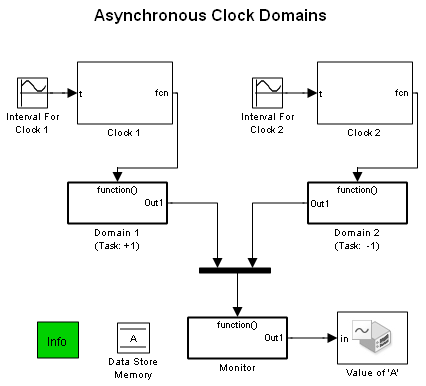
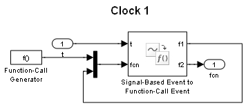
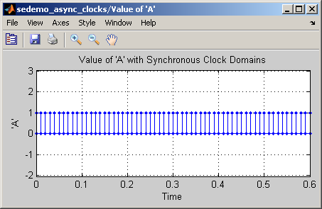
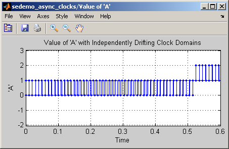
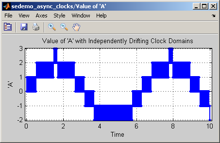
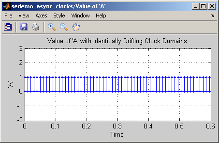

Asynchronous Clock Domains
Contents
Overview
This demo shows how to model synchronous and asynchronous clock domain behavior. A clock domain is a region of a model with timing that is derived from a single clock.
Structure of the Model
The demo illustrates the implementation of two clock domains via function-call subsystems. The function-call subsystem for domain 1 labeled Domain 1 (Task: +1) increments the value of Data Store Memory A while the function-call subsystem for domain 2 labeled Domain 2 (Task: -1) decrements the value of A. The domains are driven by separate clocks labeled Clock 1 and Clock 2. These blocks are, in turn, driven by sine wave generators labeled Interval for Clock 1 and Interval for Clock 2. By varying the parameters of the sine wave generators, the demo illustrates three types of interaction between two clock domains.
The subsystems labeled Clock 1 and Clock 2 each contain a block labeled Signal-Based Event to Function-Call Event. Each subsystem allows for the function calls generated by each Signal-Based Event to Function-Call Event block to execute itself with a time delay from the t port. The variable-delay allows both clock subsystems to generate function calls with an interval controlled by the subsystem's t port. For more information, see the 'Calling a Subsystem at Arbitrary Times' section in Bit Timing Recovery Using Fixed-Rate Resampling.
Synchronous Clock Domains
Synchronous Clock Domains are modeled when the function-call subsystems execute synchronously at regular intervals. The Interval for Clock 1 and Interval for Clock 2 blocks have their Bias parameters set to 0.01 to create the 0.01 clock interval. In addition, the Amplitude parameter is set to 0 for both blocks to avoid introducing frequency drift.
The plot shows that the value of A oscillates between 0 and 1 at intervals of 0.01 indicating that the clock domains are executing synchronously at regular intervals.
Independently Drifting Clock Domains
Asynchronous clock domains are modeled when the function-call subsystems execute at intervals that are not necessarily periodic or synchronized. The Bias parameter for the blocks labeled Interval for Clock 1 and Interval for Clock 2 are set the same as above, 0.01, but the Amplitude parameter is set to -0.0001 and 0.0001 respectively. This causes a 1% (0.0001 / 0.01) drift in each clock but with opposite phase.
The plot shows that the value of A initially oscillates between 0 and 1 but the times at which A is being decremented begin to lag behind the times at which A is incremented. At time .525, the decrement times lag the update times by one update interval and the value of A begins to oscillate between 1 and 2 instead of 0 and 1. The values for A are drifting upward as a result of the drifting clock domains.
Autoscaling the scope shows the values of A for a 10 second period. The plot shows that the value of A initially oscillates between 0 and 1 but then the values of the oscillation drift up to 2 and 3 and later down to -1 and -2 and back again. This occurs because the clocks are drifting in a sinusoidal pattern.
Identically Drifting Clock Domains
Identically drifting clock domains can be modeled by executing the function-call subsystems at intervals that are not constant but are identical to eachother. The Bias parameter for the blocks labeled Interval for Clock 1 and Interval for Clock 2 are set the same as above, 0.01, but the Amplitude parameter is set to 0.0001 to cause a 1% drift in each clock but with the same phase.
The plot shows that the value of A oscillates between 0 and 1 indicating that the clock domains are fully synchronized. The plot also shows that the period of oscillation of A is 0.01 at the start of the simulation but increases slightly as the simulation progresses.